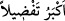
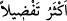

ancak himmet sahipleri ulaşır.”[60] buyurmuşlardır. Yâni ancak hayır ve maîşet
talebinde gayret sarf edenler ulaşır. Diğer bir hadiste ise şöyle buyrulmuştur:
“Cennette öyle bir derece vardır ki ona ancak üç sınıf insan ulaşır: Âdil olan,
akrabaları ile münâsebetini devam ettiren ve âilesi kalabalık sabırlı kimse.” Ali
(r.a.): “Âilesi kalabalık kimsenin sabrı nedir?” diye sorunca Hz. Peygamber (a.s.):
“Âilesine harcadığı şeyleri başa kakmamasıdır.” buyurdu. [61]
Rivâyete göre bir grup insan Hz. Ömer (r.a.)’ın odasının önünde toplandılar. Bilâl ve
Suheyb (r.a.)’ın içeri girmesine izin verildi. Bu durum Ebû Süfyan’ın ağırına gitti.
Suheyl b. Amr’a dönüp şöyle dedi:
“Şüphesiz biz daha önce uzak durduk, çekindik. Onlar da biz de İslâm’a dâvet edildik.
Onlar acele ettiler, biz ise ağır davrandık. İşte Ömer’in kapısındaki durum bu! Kim bilir
âhiretteki farklılık nasıl olacak? Eğer Ömer’in kapısındaki önceliklerinden dolayı
onları kıskanıyorsanız iyi bilin ki Allah’ın cennette onlar için hazırladıkları daha
fazladır.”
Âyetteki “__WORD__ Ekberu tafdîlen = üstünlük bakımından daha büyüktür)” ifâdesi,
bazı kırâat imamları tarafından “__WORD__ ekseru tafdîlen = üstünlük bakımından daha
çoktur” şeklinde de okunmuştur.
Bazıları şöyle demiştir: “Ey dünya meclislerinde yüceltildiği için böbürlenen kimse!
Daha büyük ve daha üstün olan âhiret meclislerinde yüceltilerek övülmeyi arzulamaz
mısın?”
Rasûlullah (s.a.) şöyle buyurmuştur: “Allah yolunda cihâd edenle oturan kimse
arasında yüz derece vardır. Her iki derece arasını ise süratli giden at ancak yetmiş
senede kat’eder.”[62] Yine Efendimiz’in şöyle buyurduğu rivâyet edilmiştir: “İlim
öğrenin. Allah Teâlâ kıyâmet günü önce peygamberleri, sonra âlimleri, sonra
şehidleri ve sonra da derecelerine göre diğer insanları diriltir.”[63] Nitekim Bahru’l-
ulûm’da böyle geçmektedir.
Mesnevîde şöyle denilir:
Bilginin iki kanadı vardır, şüphenin bir kanadı.
Zan kusurludur, zanna düşmek sonu gelmeyen bir uçuştur.
Tek kanatlı kuş, çabucak tepetaklak düşer.
Sonra uçmaya çalışsa bile ya iki adım, ya da biraz fazla uçabilir.
Şüphe kuşu düşe kalka ümit yuvasına
Tek kanatla uçmaya savaşır.
Şüpheden kurtuldu da bilgi sâhibi oldu mu